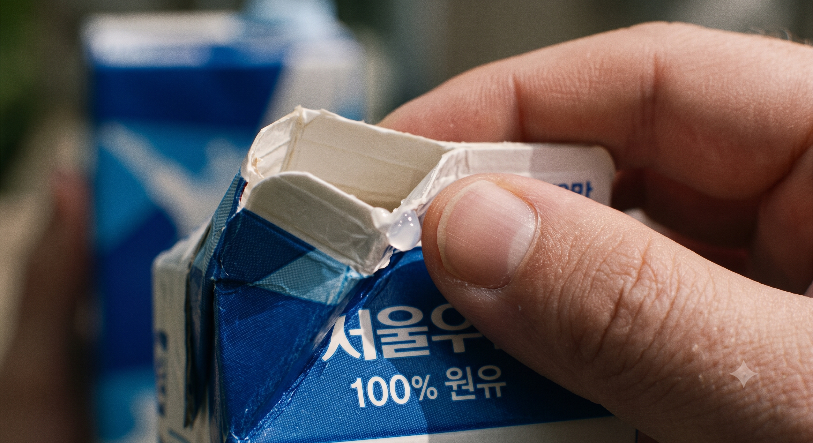

문제 1 • 흐린 사진 탐색
🌫️ "안개 속을 걷는 것처럼 흐려진 이 물건은 무엇일까요?"
💡 [탐정 수사]: 아래 흐려진 사진을 보고 어떤 재활용품인지 정답을 골라보세요. 정답을 맞힌 후 AI는 왜 이 사진을 어려워하는지 해설을 확인해 보세요!
📷 보기 사진: quest1-q1
🤖 AI 생각 해설:
사람은 대략적인 모양만 봐도 음료수병인 것을 눈치채지만, AI는 사진이 흐려지면 픽셀(점)의 경계선이 뭉개져서 사물을 전혀 찾지 못하거나 엉뚱한 물건으로 착각해요.
문제 2 • 부분 확대 사진 탐색
🔍 "돋보기로 아주 가깝게 확대한 이 부품! 어떤 쓰레기의 일부분일까요?"
💡 [탐정 수사]: 아주 가깝게 확대된 작은 금속 고리 모양을 보고 전체 물건을 추리해보세요!
📷 보기 사진: quest1-q2
🤖 AI 생각 해설:
사람은 둥근 고리 모양만 보고도 바로 '캔 뚜껑'을 떠올려요. 반면 AI는 전체적인 캔의 원기둥 형태를 보지 못하고 은색 쇠붙이 부분만 보면 그냥 '금속 조각'으로만 인식할 수 있어요.
문제 3 • 가려진 사진 탐색
🧱 "벽 뒤에 숨어 몸의 일부만 살짝 보이는 이 재활용품은 무엇일까요?"
💡 [탐정 수사]: 다른 물건에 가려져 일부분만 보이는 재활용품의 형태를 찾아보세요!

📷 보기 사진: quest1-q3
🤖 AI 생각 해설:
사람은 모서리의 접힌 종이 모양과 상단 빨대 구멍만 보고도 종이팩임을 알아채요. 하지만 AI는 다른 물건에 가려져 전체 모양(특징)이 숨겨지면 배경과 쓰레기를 구별하기 매우 어려워해요.
QUEST 1: AI의 눈 탐구 완료!
3개 퀴즈를 모두 풀고 사람과 AI가 사진을 보는 방법의 차이를 완벽히 이해했습니다!
| 구분 | 👤 사람의 눈 | 🤖 AI 컴퓨터의 눈 |
|---|---|---|
| 흐린 사진 | 대략적인 색상과 실루엣으로 유추 가능 | 픽셀 경계선이 뭉개져 인식 실패 또는 오작동 |
| 확대한 사진 | 작은 고리나 손잡이로 전체 물건 연상 | 전체 모양이 없으면 단순 금속 조각으로 착각 |
| 가려진 사진 | 접힌 모서리나 빨대 구멍으로 추론 | 가려진 부분을 배경으로 처리하여 놓치기 쉬움 |
💡 다음 퀘스트 안내:
AI가 사진을 잘 구별하게 하려면 우리가 직접 명확한 규칙을 알려주어야 합니다!
다음 [QUEST 2: 사람의 분류 규칙을 AI에게 설명하라]에서 블록 코딩 규칙을 만들어보세요.